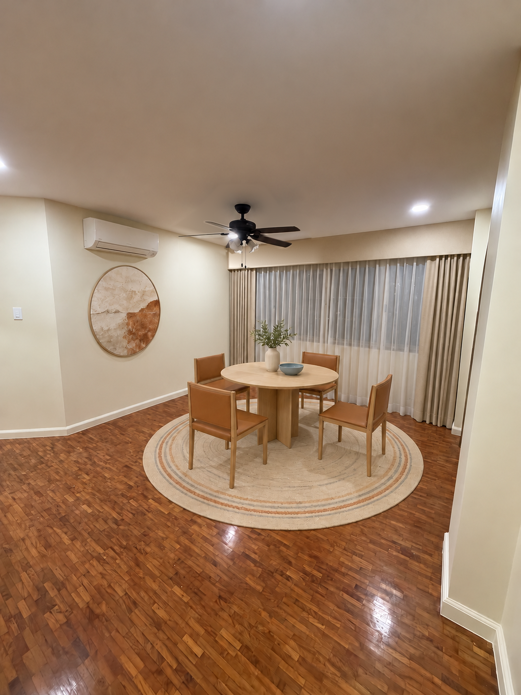
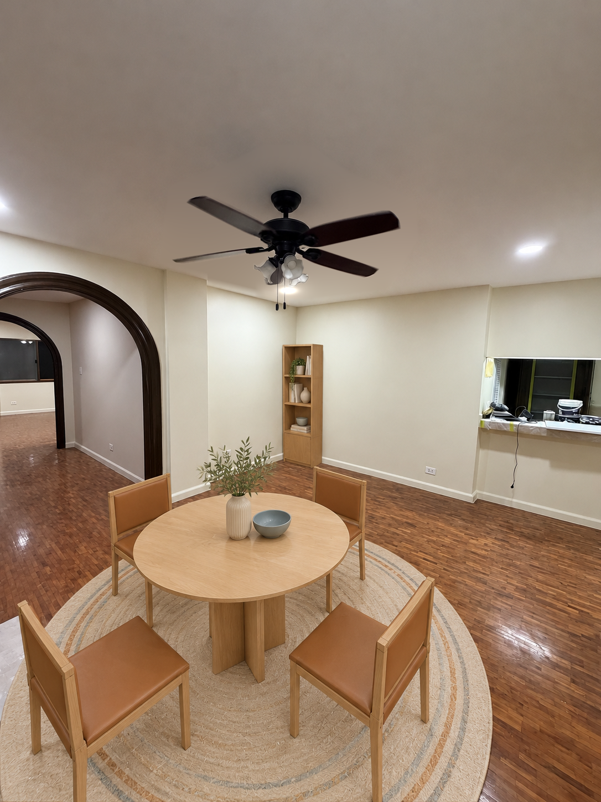
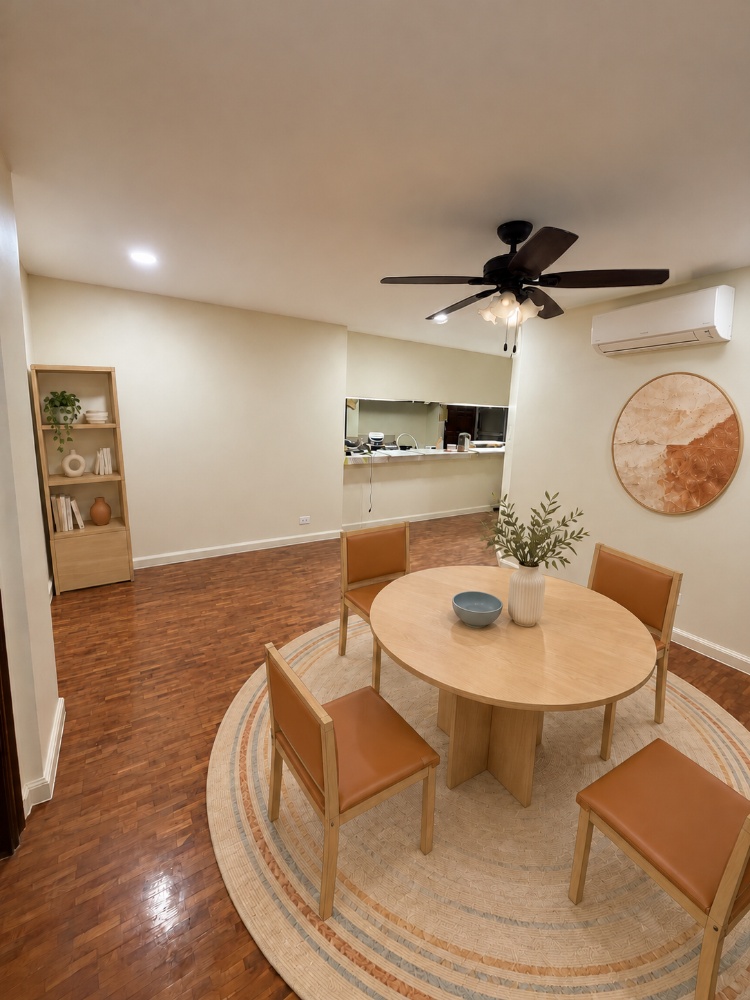
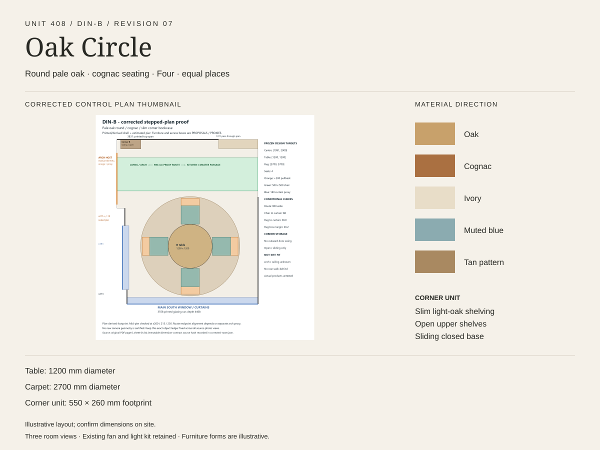

Unit 408 · Dining room · reviewed design DIN-B
Oak Circle
A round pale oak table and cognac seating for four sit on an ivory patterned carpet. Shallow corner storage is proposed while the counter-side route remains open.
Three room viewpointsExisting dining fan and light kit retainedTable: proposed 1200 mm diameterCarpet: proposed 2700 × 2700 mm



Materials and proposed layout

These are approximate design illustrations, not as-built photographs or purchase approval. The existing dining ceiling fan and light kit are retained; existing recessed lights remain. Chair movement, curtain operation, route clearances, mounting and service access for the proposed split AC, and furniture fit still need site confirmation. Furniture, stock and prices are illustrative.
Earlier fan-free review: window · arch · passage · board. Current revision manifest.